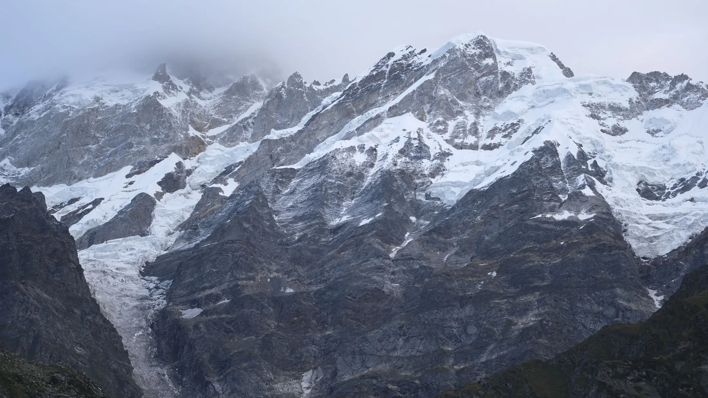

- Guided fees for popular Himalayan treks listed in October 2026 run from about 8,500 to 13,500 rupees plus 5% GST. Triund, a short trek, is about 3,000.
- The fee usually covers tents, food, permits at the Indian rate and a leader. Transport, insurance, bag offloading and rentals are often extra.
- Compare the same things: start point, transport, GST, permit rate and what is excluded, not just the headline price.
A guided Himalayan trek in India typically costs about ₹8,500 to ₹13,500 plus 5% GST per person for five days, based on operator pages we checked in October 2026, and the headline price is only part of the bill. Transport, insurance, bag offloading and rented gear are often extra, so compare what each price includes.
What do six popular treks cost?
These are base prices per person from each operator's own page, with the start point and what they say is added. They are examples, not recommendations; other operators run the same treks at different prices.
| Trek (operator) | Listed price | Start and transport | Extras listed on the page |
|---|---|---|---|
| Kedarkantha (Bikat Adventures) | ₹9,500 + 5% GST | Sankri to Sankri; Dehradun transport is a ₹2,500 add-on | Offloading ₹1,400; insurance ₹206; single tent ₹1,050 |
| Brahmatal (Himalayan Dream Treks) | ₹8,499 + 5% GST | Rishikesh to Rishikesh, transport included (₹6,499 without) | Offloading and insurance extra |
| Dayara Bugyal (Himalayan Dream Treks) | ₹8,999 + 5% GST | Dehradun to Raithal and back included | Offloading ₹1,500; insurance compulsory |
| Har Ki Dun (Bikat Adventures) | ₹12,500 + 5% GST | Sankri; Dehradun to Dehradun transport +₹2,200 | Offloading ₹1,750; single tent ₹1,400 |
| Hampta Pass (Bikat Adventures) | ₹13,500 + 5% GST | Manali to Manali, including Chandratal | Offloading ₹1,500; Chandratal entry ₹300 paid on the spot |
| Valley of Flowers (Himalayan Dream Treks) | ₹10,500 (booking form adds 5% GST) | Rishikesh to Govind Ghat and back, 5 nights | Insurance, offloading and Badrinath registration extra |
For a short trek, Triund is much cheaper: Himalayan Dream Treks lists ₹3,000 plus 5% GST from McLeod Ganj with one night in a tent (its booking form showed a display error, so confirm). Prices move: the Hampta Pass fee on Bikat's page is ₹13,500 now, and earlier in our research it was ₹12,500.

What is usually included?
The operator pages we read are consistent. The fee covers tents (often twin or triple sharing), sleeping bags and mats, vegetarian meals from the first dinner to the last breakfast, a trek leader, guide and cook, a first-aid kit with oxygen and stretcher, and forest permits and camping charges. For some operators the permits are covered only up to the Indian rate, so foreigners may pay the difference; Bikat says so for Kedarkantha, Har Ki Dun and Hampta Pass. Microspikes and gaiters are often provided if needed. Himalayan Dream Treks includes forest entry, permits, fuel and tolls.
What costs extra?
- GST. Operators list 5% on top of the base price. On ₹9,500 that is ₹475.
- Transport to the start. Some include it, some do not. Bikat lists ₹2,500 for Dehradun transport on Kedarkantha and ₹2,200 on Har Ki Dun. Our trek pages list shared cabs at about ₹6,500 one way per car from Dehradun for Dayara and from Rishikesh for Brahmatal, split among passengers.
- Bag offloading. Having a porter or mule carry your rucksack is ₹1,400 to ₹1,750 with Bikat. Trekkaro lists ₹2,000 plus GST for the Valley of Flowers. Several pages advise against it, as it adds load to the environment and reduces the trek's challenge.
- Insurance. Bikat offers outdoor insurance for Indian nationals at ₹206. Himalayan Dream Treks says insurance is compulsory for Dayara. Rescue and hospital costs are not in the trek fee on any page we read.
- Rentals. Himalayan Dream Treks rents a jacket for ₹100 a day at the 3+ day rate, high-ankle shoes for ₹200, a bag for ₹100 and poles for ₹50. See our packing list.
- Park and camera fees. Hampta Pass adds ₹300 for Chandratal. On Sandakphu, Wikivoyage lists guide fees per day and porters at ₹800 a day, up to 20 kg.
- Travel to the base city, hotel nights before and after, meals on road journeys and personal spending.

Why do prices differ for the same trek?
Quotes for one trek can sit far apart. Our Brahmatal page lists Bikat Adventures at ₹10,500 plus GST from Lohajung, with transport extra, against ₹8,499 plus GST with transport from Rishikesh at Himalayan Dream Treks. Differences can come from the start point, whether transport is in, group size, tents, food and the experience of the team, so ask for an itemised quote rather than choosing the lowest number.
Foreign trekkers usually pay more, mainly through park and permit fees. Govind park charges non-Indians ₹600 for three days against ₹200 for Indians, and tent fees are doubled, so an operator's Indian-rate price may not cover everything.
A sample Kedarkantha budget
Using the listed prices, and our own arithmetic: the trek is ₹9,500 plus 5% GST, so ₹9,975. Add ₹2,500 for transport from Dehradun and ₹206 for insurance, and rent a jacket, shoes and poles for five days at the 3+ day rate (₹500, ₹1,000 and ₹250). That comes to roughly ₹14,400, before travel to Dehradun, extra nights and food on the road, and assuming no GST on the add-ons. Your own total will differ, so ask the operator for an itemised quote.
How to compare quotes fairly
- Same start point and end point: ex-Dehradun is not ex-Sankri.
- GST in or out, and any payment gateway fees. Himalayan Dream Treks' booking forms note payment gateway fees at checkout.
- Permit rate: Indian or foreign. See trek permits in India.
- Gear included: tents and sleeping bags, spikes, jackets.
- Safety: a certified leader, oxygen, oximeter and an evacuation plan.
If you are choosing between two treks, our Kedarkantha vs Brahmatal comparison puts the costs side by side.
Prices were read from operator pages in October 2026, change often and are not offers. Operators are named only as sources of facts; Treqz does not endorse or sell treks.
Sources
- Bikat Adventures: Kedarkantha
- Bikat Adventures: Har Ki Dun
- Bikat Adventures: Hampta Pass
- Himalayan Dream Treks: Brahmatal
- Himalayan Dream Treks: Dayara Bugyal
- Himalayan Dream Treks: Valley of Flowers
- Himalayan Dream Treks: Triund
- Himalayan Dream Treks: gear rental in Dehradun
- Govind Wildlife Sanctuary and National Park: fees
- Trekkaro: Valley of Flowers
- Wikivoyage: Sandakphu
Quick questions
How much does a Himalayan trek cost in India?
From the operator pages we checked in October 2026, a five-day trek such as Kedarkantha or Brahmatal costs about 8,500 to 9,500 rupees plus 5% GST, and longer or higher treks such as Hampta Pass cost about 13,500 plus GST. Add transport, rentals and insurance.
Is GST included in the trek price?
Usually not. Bikat Adventures and Himalayan Dream Treks list 5% GST on top of the trek price on their pages. Check whether your quote includes it.
Do I pay extra for a porter or bag offloading?
Often yes. Bikat lists offloading at Rs 1,400 for Kedarkantha, Rs 1,750 for Har Ki Dun and Rs 1,500 for Hampta Pass. Trekkaro lists Rs 2,000 plus GST for the Valley of Flowers.
Can I trek cheaper by going on my own?
Sometimes, but you take on permits, guides, tents and safety yourself, and some areas require a registered guide. Read our solo trekking guide first.